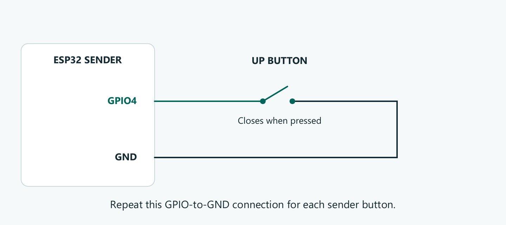
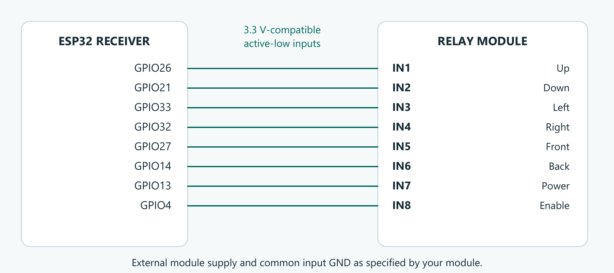
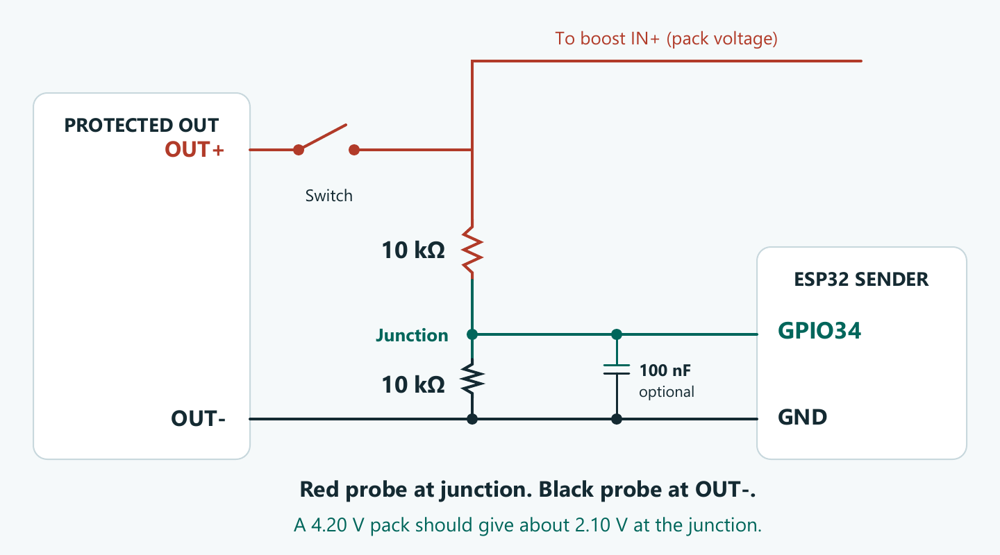
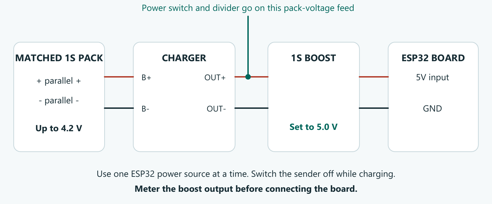

Power On/Off
Hold 3 seconds, then release
Repeat the hold to toggle Power off. It also turns off after 60 minutes of inactivity by default, or on controlling-link loss or Emergency Stop.
THE CRANELINK HANDBOOK
Set up your handheld, connect the right receiver, and know what every button does.
Use this guide with the current ESP32-WROOM relay bench. Keep relay contacts disconnected from the crane and 110 V wiring during setup and testing. Crane service requires an independent safety-rated stop circuit and a qualified controls review.
GET CONNECTED
Have the receiver, each handheld, and a USB data cable ready. Use desktop Chrome or Edge. Android Chrome can also use a compatible USB host/OTG cable and adapter. Use a desktop browser for iPhone or iPad USB installation.
Step 1 of 4
Open USB setup, choose one to four handhelds, and press Start setup.
Illustrated walkthrough. Connect and upload from the USB setup page.
It contains each board’s station MAC, receiver Wi-Fi name and password, and the handheld’s private setup Wi-Fi details. Store it privately.
DAILY USE
Power both boards and release every button before starting. A direction operates while you hold it. With the default assignments, its relay and R8 energize together, then release together.
Hold 3 seconds, then release
Repeat the hold to toggle Power off. It also turns off after 60 minutes of inactivity by default, or on controlling-link loss or Emergency Stop.
Press to turn all eight outputs off
To reset, release all buttons, hold Power + Emergency Stop together for three seconds, then release both. Start a new direction press after reset.
The software Stop commands all relay outputs off. It cannot detect welded relay contacts. Verify contact release with a meter during bench tests.
CONTROL HANDOFF
The handheld works after power-up with the phone disconnected from receiver Wi-Fi. To use the phone, join the receiver’s Wi-Fi and open http://192.168.4.1/. Stay connected if the phone reports “no internet”.
Release all buttons, wait for the receiver link, then press a direction. The phone page can stay closed.
If command packets expire, the receiver drops motion and Power. The nominal software timeout is 650 ms. Wi-Fi can take about ten seconds of inactivity to notice a phone that left range. Give a fresh press after reconnection.
ONE HANDHELD, MORE RECEIVERS
A master handheld stores up to four receiver entries. Use the temporary setup Wi-Fi on the handheld to add installed receivers. Give each receiver a different label and pairing key.
Its sender slot holds the handheld’s address and a shared key.
Its receiver entry holds the receiver’s address and that same key.
http://192.168.4.1/. In Settings and sender pairing, choose an empty slot or the slot for this same handheld. Enter the handheld’s Station MAC.http://192.168.4.1/. Confirm it says Handheld setup. Enter the receiver label, Receiver station MAC, and the same Shared key. Tap Save receiver.Receiver settings need the handheld station MAC. Handheld setup needs the receiver station MAC. A key is 32 hexadecimal characters. Keep it private.
Wait for the flashes to finish and the link light to go solid, then press a direction. The list cycles back to receiver 1. If the selected receiver is unavailable, the handheld keeps searching for it. Emergency Stop addresses the selected receiver.
Handheld setup pauses radio control and closes its Wi-Fi after 15 minutes of inactivity. Re-enter it by holding Power at startup. Adding an existing receiver MAC updates that entry in place.
CONNECTION GUIDE
Use the printed GPIO number on the board. Board layouts vary. Connect every sender button between its assigned GPIO and the sender’s GND.

| Button | GPIO |
|---|---|
| Up / Down | 4 / 32 |
| Left / Right | 33 / 25 |
| Front / Back | 26 / 27 |
| Power On/Off | 13 |
| Emergency Stop | 14 |
| Input | GPIO | Default action |
|---|---|---|
| IN1 / IN2 | 26 / 21 | Up / Down |
| IN3 / IN4 | 33 / 32 | Left / Right |
| IN5 / IN6 | 27 / 14 | Front / Back |
| IN7 | 13 | Power latch |
| IN8 | 4 | Direction enable |

Use an active-low relay module with 3.3 V-compatible inputs and its specified external supply. For common-ground inputs, connect relay input GND to receiver GND. Confirm the module’s VCC and JD-VCC requirements. Keep 5 V off GPIO pins. This diagram covers low-voltage input wiring.
HANDHELD POWER
For the matched 1S parallel pack, use the charger’s protected OUT+ and OUT−. Two equal resistors create a sense point at half the pack voltage.

4.20 VFull pack
2.10 VExpected at the junction

Use a converter rated for the full 1S pack discharge range. A board stamped XL6009 has a specified input starting at 5 V, so use a 1S-rated boost module for this pack. Switch the sender off while charging. Use one development-board power source at a time.
| Part | Connection |
|---|---|
| Status LED | GPIO23 → 470 Ω → LED anode. Cathode → GND. |
| Passive piezo | GPIO18 → piezo +. Piezo − → GND. |
Use a small 3.3 V passive piezo. A powered or magnetic buzzer needs a suitable driver and its rated supply.
The low warning starts near 3.50 V under load and clears above about 3.65 V. Compare with a multimeter. Voltage indicates battery condition approximately.
For a USB diagnostic check with a live pack, disconnect the converter’s 5 V output from the ESP32 first. Keep the divider and common ground connected.
Short flash about once a second. A periodic tone accompanies the search.
CUSTOMIZATION
In Receiver Wi-Fi, connect the receiver by USB and disconnect the phone from receiver Wi-Fi. Enter 4–12 letters or digits, such as MH14AB4292, and an 8–63 character password without spaces. Choose Apply over USB. Names save in uppercase and the receiver restarts.
On the receiver’s phone page, open Settings and sender pairing. Assign Up, Down, Left, Right, Front, Back, and Power to R1–R7. Choosing an occupied relay swaps its old assignment. Select Save relay settings. R8 is reserved.
Set Power idle timeout from 1 to 720 minutes. The default is 60. Direction commands and Power holds count as activity. Idle radio packets and an open page do not extend the timeout.
All directions together is the default for the disconnected bench. NO/NC interlock allows one direction per Up/Down, Left/Right, and Front/Back pair. The first held direction wins. If both arrive together, the pair stays off. Release both before reversing after a conflict.
Turn Web Run and Power off and release handheld controls before changing assignments or pairing. Software direction interlock controls commands. Use the module’s contact markings for physical NO/NC wiring.
GET BACK TO READY
Disconnect the phone from receiver Wi-Fi, release every handheld button, and check the receiver selection. If Stop is latched, release the buttons, hold Power + Emergency Stop for three seconds, then release both. If the link is missing, power both boards nearby on the bench and check their saved addresses with USB diagnostics.
Stay connected to the receiver’s Wi-Fi when the phone warns there is no internet. Type the full address http://192.168.4.1/. Confirm the page says CraneLink Phone Bench. The handheld uses the same address for its separate Handheld setup page, so reconnect and reload after changing networks.
Keep the same setup tab open. Reconnect the same board and select Retry pairing only. If the board reports older firmware, use Connect and upload. Release BOOT and tap EN/RESET if the board stays in upload mode. Close other programs or tabs using the USB port.
Run Check connected board for the sender. Closed inputs should read All released when you release every button. Check the corresponding GPIO-to-GND switch circuit. The Emergency Stop input is GPIO14 and Power is GPIO13.
Check the module’s external supply, input voltage compatibility, and any VCC/JD-VCC jumper requirements against its markings. The page reports commanded outputs. Check the actual contact change with a continuity meter on the disconnected bench.
R8 is the direction-enable output. It follows one or more directional commands and releases when the jog ends. The Power latch uses R7 by default and can be reassigned.
Check that battery monitoring is enabled and the divider uses two equal 10 kΩ resistors. Measure the junction against OUT−. It should be half the pack voltage before the boost converter. Confirm OUT− is connected to ESP32 GND.
KEEP YOUR SETTINGS
Before changing hardware, save your Wi-Fi names, station MACs, receiver order, relay assignments, and Power timeout. The private setup report records board identities and Wi-Fi credentials. Record relay settings separately.
Update the new handheld with Update handheld firmware. Read its new Station MAC. On each receiver, replace the old handheld’s sender slot with this MAC and a new shared key. Add that receiver to the new handheld through wireless setup.
Install the receiver role using Install and pair and complete the sender steps in that same session. Restore relay settings. For a master handheld, use wireless setup to save the replacement’s MAC and key. An added replacement has a new MAC and can consume another entry; use the USB master wizard if you need to rebuild the four-entry list.
KEEP A COPY AT THE BENCH
A 16-page illustrated manual with setup, controls, pin tables, wiring diagrams, fault checks, and a blank equipment record.
A5 pages in normal reading order. Use your printer’s booklet option if you want it to arrange the pages.
Download product bookletFour A4 sheets, already arranged as a booklet. Print actual size, landscape, double-sided, flip on the short edge. Keep booklet rearrangement off, then fold and staple.
Download A4 print versionGuide edition 1 · 19 November 2026 · Current ESP32-WROOM relay bench firmware.